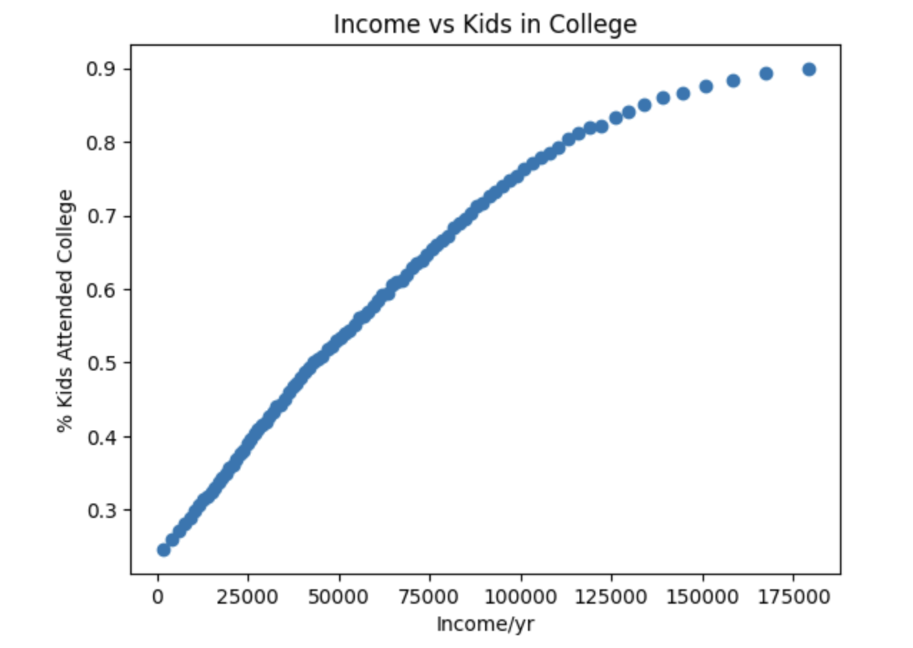

Projects
A desert-themed 2D platformer game made with the Unity game engine. The game is currently still in development, but in the mean time you can check out the Daze Town website, which has a free demo included.
College Attendance Analysis
Descriptive and inferential statistical analysis of the relationship between parent income and the likelihood of a child attending college. Dataset used: Statistics By Parent or Child Income Percentile. Statistical Analysis Report included in the Github repository.
Meal Planner App
A personal dinner planning application. The user can input their recipes and current pantry ingredients inventory, and the app will show which meals the user can make most easily with the ingredients they have. Then the user can plan out which recipe to do on a certain day of the week, or select a random day/recipe if they don't have a preference.